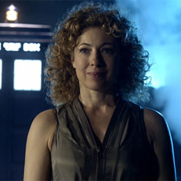

[Primary Navigation] |
|||||||||
|
River SongPortrayed by Alex Kingston "River Song", the primary alias of the third incarnation of Melody Pond, was a "child of the TARDIS" and a known wife of the Eleventh Doctor. She was human with Time Lord characteristics, conceived by her parents, Amy Pond and Rory Williams, aboard the TARDIS as it travelled through the time vortex, and then conditioned by the Silence. This gave her great strength, the ability to regenerate and a great understanding of the complex principles of time and space. She loved the Doctor, and shared a long-lasting relationship with him. River was one of the very few people who knew the Doctor's true name. Melody was stolen from her parents as an infant by Madame Kovarian to become a weapon of the Silence in their war against the Doctor. After potentially her second regeneration, she killed the Eleventh Doctor, but then broke her mental conditioning to give her remaining regenerations to revive his corpse. In her first incarnation as the 'little girl', Melody was shy, innocent and terrified of the "monsters" who had trapped her in the spacesuit. A later incarnation, 'Mels', was saucy, often in trouble and chased by police just before her regeneration. She resented the Doctor and blamed him for historical disasters, but wanted to marry him. She was quite reckless and daring, stealing vehicles to go on joyrides. Along with her rebellious behavior, she had a dangerous curiosity that led her to fire off a gun in the Doctor's TARDIS to test out if it had a temporal grace blocking the use of firearms, which was a bluff. Her bullet pierced the time rotor and sent the TARDIS spinning out of control with a great volume of toxic gas pouring out of the hole it made in the damaged casing. Mels also liked to use the phrase "penny in the air...and the penny drops", when people around her were slow on the uptake to realize something that she clearly understood, then finally became aware of the truth. |
||||||||